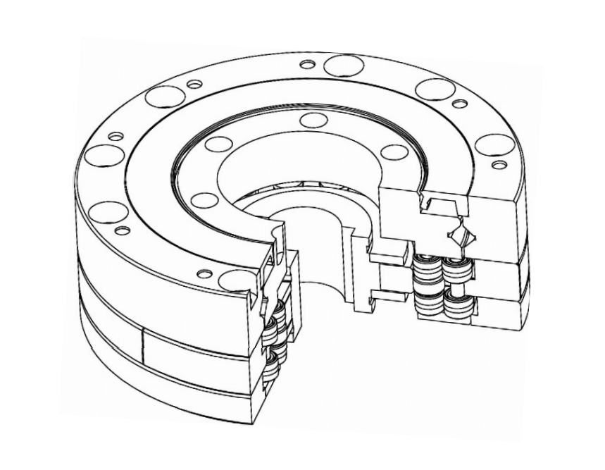
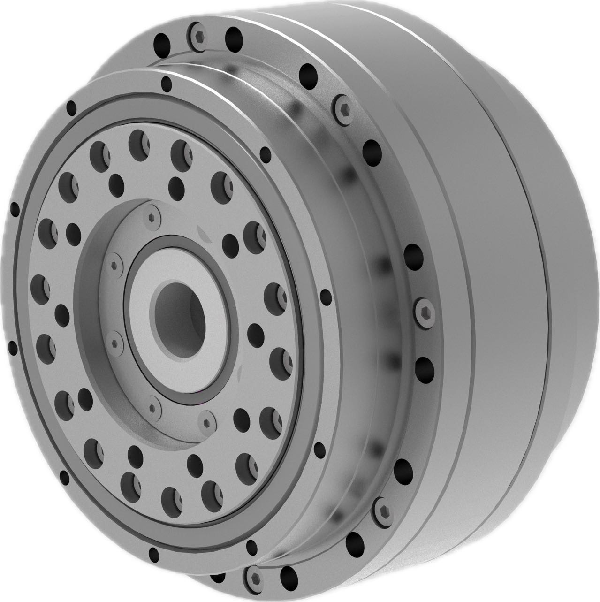
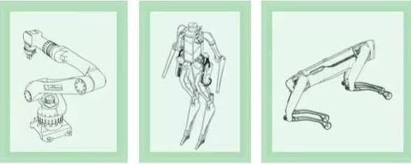
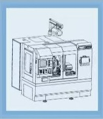
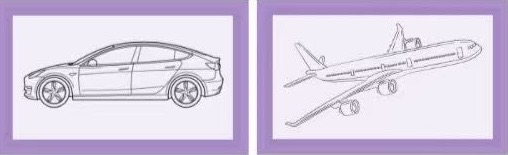

活齿减速器
以全新结构，定义下一代机器人与机床核心动力
行业痛点：被“卡脖子”的机器人心脏
减速器是工业机器人中成本占比最高的核心部件。全球高端市场长期被国外品牌垄断，国产方案在精度、寿命和效率上存在代差，利润空间狭窄。面对即将爆发的人形机器人时代，市场亟需一场动力革命。
技术垄断
高端RV与谐波减速器市场由日本两家企业主导，形成技术与价格壁垒。
性能差距
国产减速器在精度保持性、工作寿命、传动效率等关键指标上全面落后。
未来挑战
人形机器人对减速器提出了体积更小、效率更高、成本更低的苛刻要求。
我们的解决方案：活齿减速器
苏州冷石传动科技，依托北京航空航天大学的深厚研究底蕴，推出革命性的“活齿减速器”，旨在全面替代现有技术，为中国乃至全球的机器人产业提供一颗强大的“中国心”。
滚动活齿减速器
用纯滚动摩擦替代滑动摩擦，从根本上解决磨损与效率问题。旨在全面替代RV减速器。
- ✓超高效率: 传动效率高达93-95.3%，远超传统方案。
- ✓超长寿命: 预期寿命超10,000小时，实测6000小时工作后精度仅下降6角秒。
- ✓更高刚性: 刚度比RV减速器高出20%以上。
滑动活齿/谐波减速器
针对谐波减速器的革新方案，性能全面提升，结构更加紧凑。
- ✓结构紧凑: 体积减小1/3。
- ✓刚度翻倍: 刚度提升1倍以上。
- ✓效率提升: 传动效率提高10-20%。
交互式性能对比
我们的技术在各项关键性能指标上均实现了重大突破。点击下方按钮，直观感受活齿减速器与主流竞品的性能差异。
性能对比分析
请选择一个对比目标，查看滚动活齿减速器的性能优势。我们的产品在传动效率、工作寿命、精度保持性和扭转刚度等核心维度上均表现出色，同时具备显著的成本效益。
应用领域
活齿减速器在精密制造领域有着广泛的应用途径，为追求极致的客户提供高性能方案。
现有产品
活齿机器人减速器
活齿减速器转台

应用场景
工业机器人人形机器人/四足机械狗
四轴/五轴机床
新能源汽车/航空航天制造……
发展蓝图与团队实力
我们拥有顶尖的专家团队和清晰的产业化路径，致力于成为全球机器人关节减速器领域的领导者。
发展规划
2023-2024
完成技术验证，实现转台销售，减速器进入外部测试。
2025
高端关节减速器进入工程化应用，建设3万台年产能。
2026
建设10万台工业机器人大减速器制造基地。
2027+
建设50-100万台人形机器人减速器产能，成为行业首选。
核心优势
创始人：陈志同教授
苏州冷石传动科技有限公司总经理，山东天舟精密机械有限公司董事长，北京航空航天大学机械工程及自动化学院教授，博士生导师。
顶尖团队
核心团队汇聚北京航空航天大学，东京大学等顶尖学府硕士博士。核心研发团队硕博比例接近50%。
显著成本优势
通过结构与工艺创新，预计制造成本降低1/3，自研核心制造设备，设备投入降低2/3。
市场机遇与融资计划
我们的目标市场覆盖百亿级的工业机器人、精密机床，以及潜力巨大的千亿级人形机器人市场。
2025年融资计划
3000万
用于建设年产3万台的活齿减速器生产线
新原理 新结构 高精度 长寿命
冷石传动竭力为工业母机，工业机器人，人形机器人和精密仪器提供最满意的精密传动解决方案